一：实验内容
- 掌握python进行图像处理、了解opencv-python库的使用
- 基于robert、prewitt、sobel算子完成图像边缘提取
- 了解SUSAN、Harris、SIFT算子的特征检测
二：实验过程
（一）边缘提取
（1）卷积算子
a：robert交叉算子
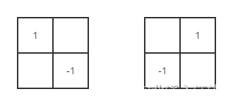
b：prewitt算子
c：sobel算子
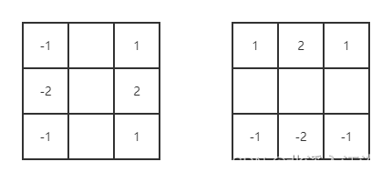
d：laplacian算子
（2）实验代码
|
|
（二）特征点检测
（1）实验代码
|
|
三：实验结果及分析
（一）边缘提取
（1）实验原图
（2）robert算子
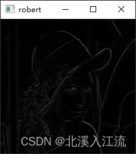
提取时间：0.0020003318786621094
（3）prewitt算子
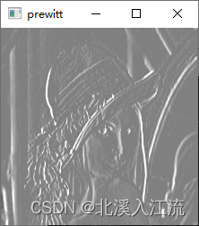
提取时间：0.0010013580322265625
（3）sobel算子
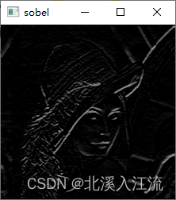
提取时间：0.002001523971557617
（4）laplacian算子
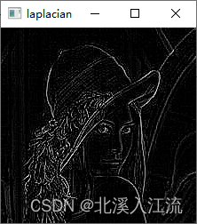
提取时间：0.001997232437133789
（5）综合对比
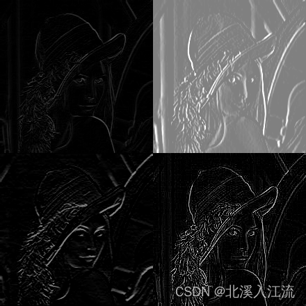
- robert提取时间：0.0020003318786621094
- prewitt提取时间：0.0010013580322265625
- sobel提取时间：0.002001523971557617
- laplacian提取时间：0.001997232437133789
通过上图可以看出，laplacian二阶算子的边缘提取算子的提取效果明显优于robert，prewitt，sobel等一阶算子。且一阶算子和二阶算子在提取的时间上和算法的复杂度上相差不大，所以在实验中，如果有特征提取需求的话，可以尽量多采用二阶算子进行边缘提取。
（二）特征点检测
（1）实验原图
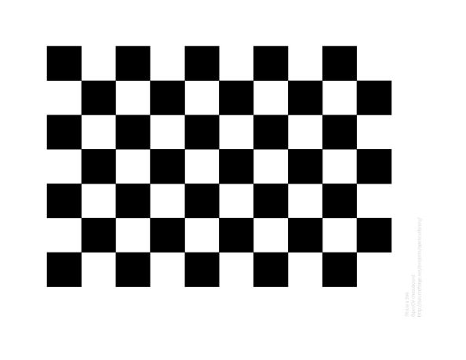
（2）susan特征点检测
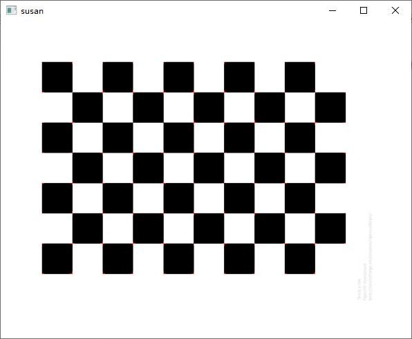
（3）harris特征点检测
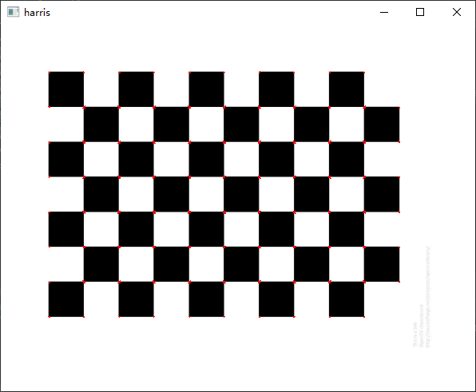
（4）sift特征点检测
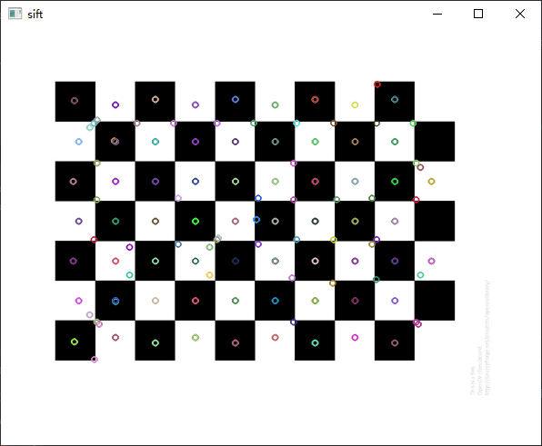
（5）综合对比
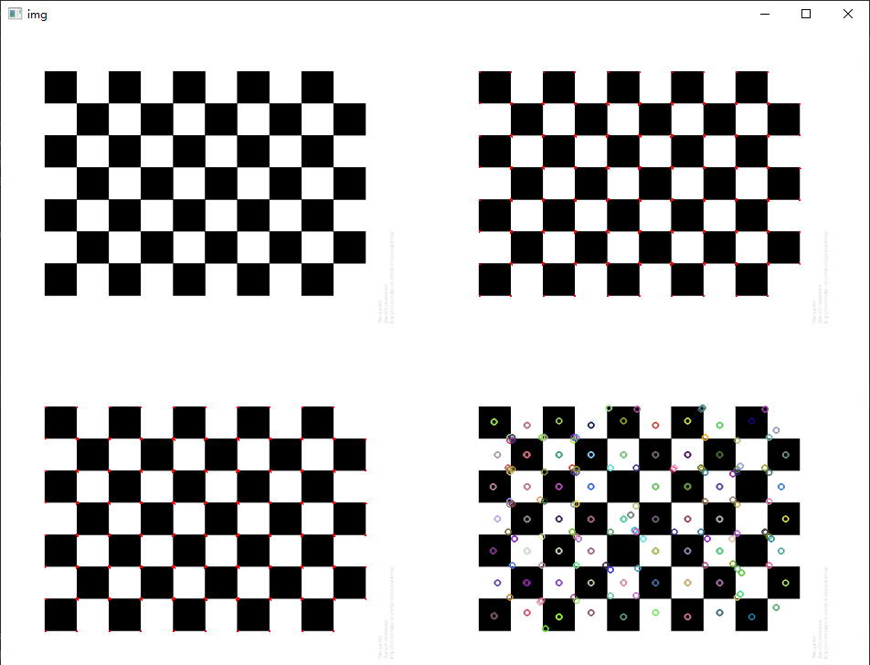
在实验中，因为opencv不提供（或本人没有找到）有关susan的特征点检测的函数，所以susan特征点检测是自己写的，相比于其他特征点检测直接调用底层库较慢。在三个检测图片中，可以发现sift特征点检测检测到的特征点更多，其他检测是边缘特征点，二sift不仅检测了边缘特征点，也检测出了中心特征点。